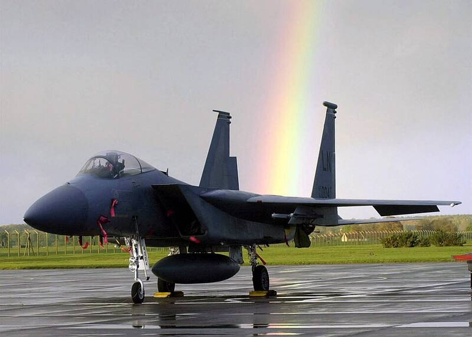

RAF Lakenheath
Suffolk, England

A U.S. Air Force base in England. In August 1956, radar at Lakenheath and Bentwaters tracked fast-moving targets that RAF night fighters tried to intercept, one of the most-studied radar and visual cases. 1
Open in the interactive Watcher
Sources
- Lakenheath-Bentwaters incident Wikipedia